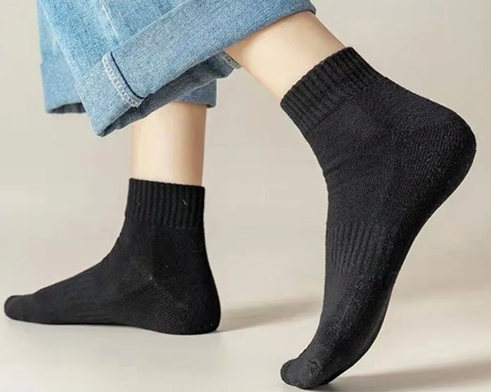
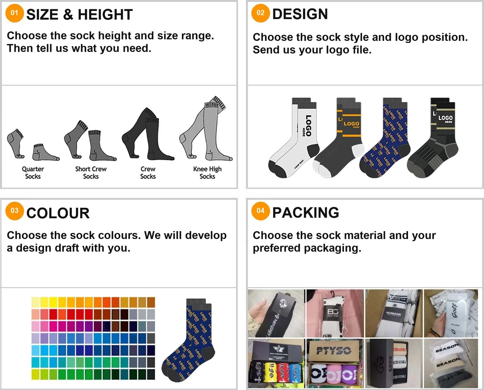
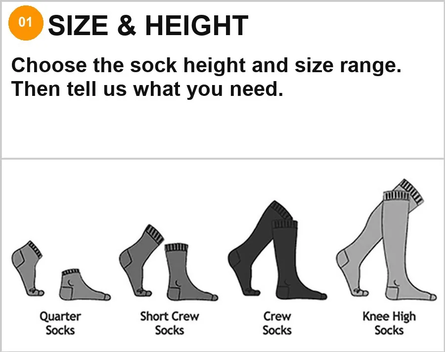
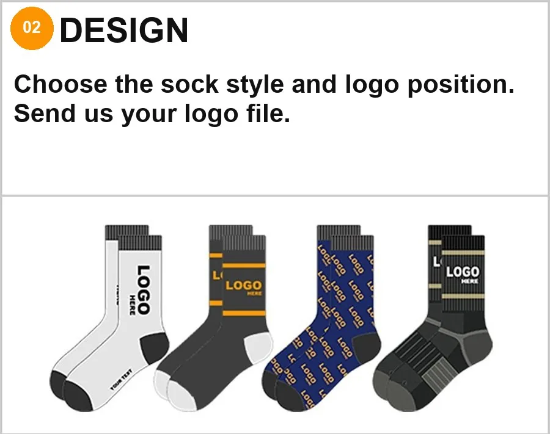
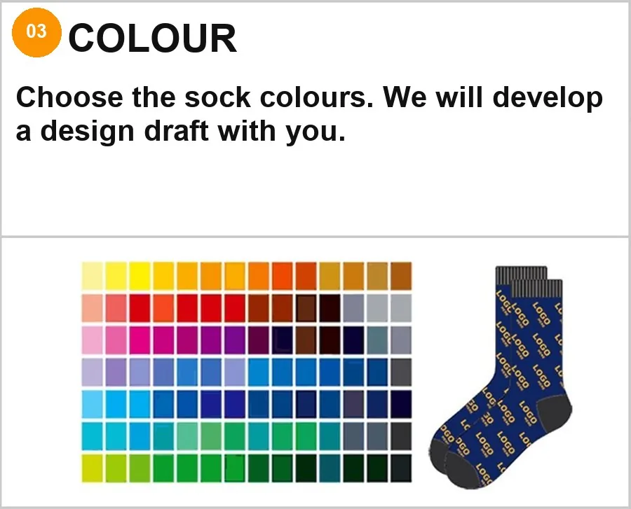
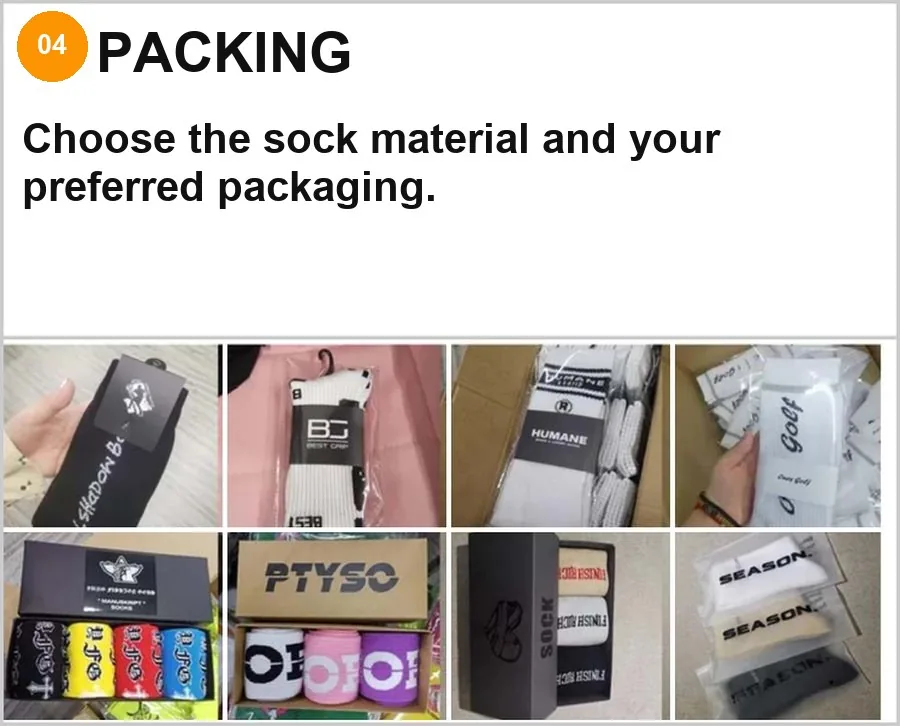
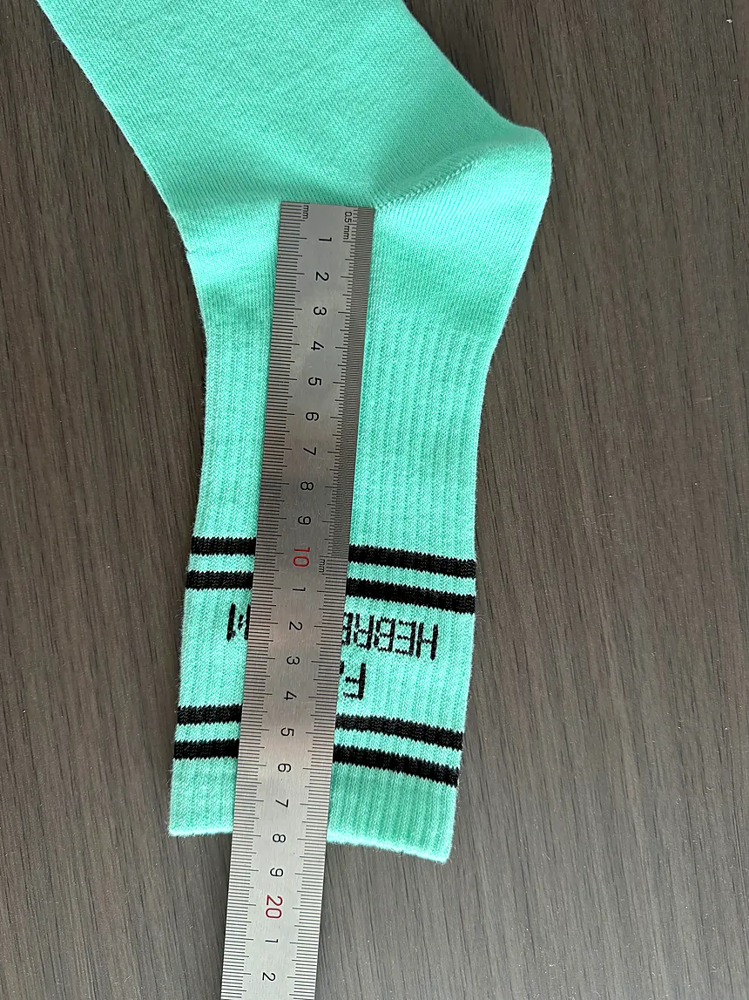
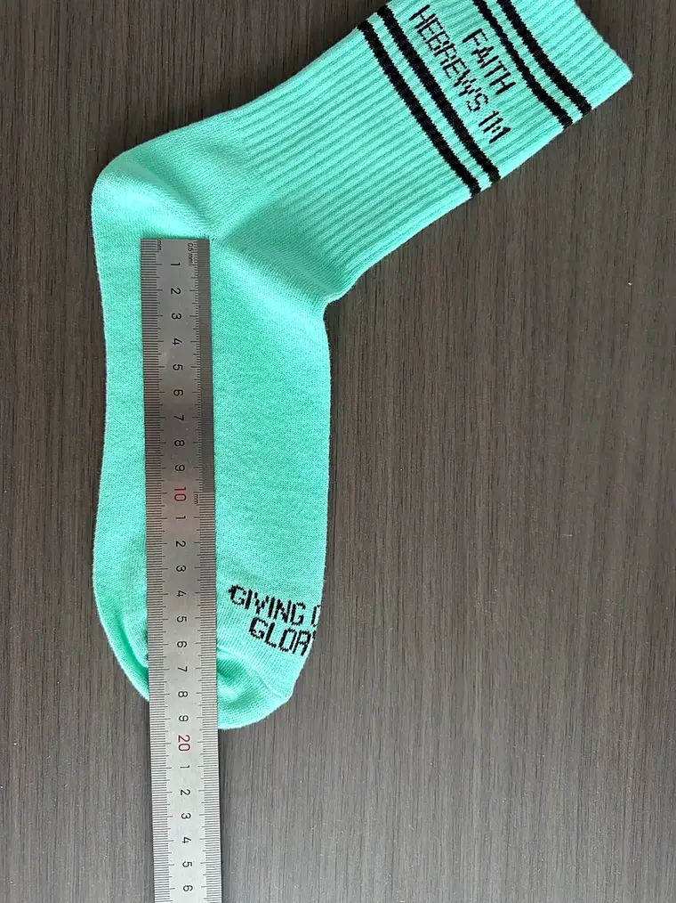

Customization
Yarn, height, colour, logo method and packing are all fixed at sampling — change one of them later and it becomes a new style.

The customization steps
Send these in one message and the style is quoted and sampled without a second round.





Logo methods
Each one has a page of its own.
Knitted into the fabric, so nothing lifts in the wash.
Raised stitching, the most dimensional of the four at close range.
Gradients and photographs, wrapping the whole sock.
Silicone, PVC or flocked, printed straight onto the sole.
Specification
Anything outside this table is possible — it just needs a conversation and a sample.
| MOQ | 100 pairs per style per colour, on every height |
|---|---|
| Sampling | 3–5 days after artwork approval |
| Bulk lead time | 20 days for 1–500 pairs; rush available |
| Needle gauge | 144N / 168N / 200N |
| Yarn | Combed cotton, polyester, acrylic, nylon, spandex blends |
| Sizes | EU 35–50 adult and 16–35 kids, US 3–16 — or your own chart |
| Packing | Poly bag, header card, hang tag, retail box |
| Trade terms | EXW / FOB / CIF / DDP — quoted per order |
Size chart
Three numbers make a correct sock. Send those and it is built to them — a size is not picked off a range.
A is the cuff, B is the tube, C is the foot. Length is measured flat from the centre of the heel — the point where the heel is knitted — to the top of the cuff, so it covers A and B together. C is taken on its own, heel centre to toe.
Send all three and the size is cut to them. A brief that says "medium" gets a medium from our chart; a brief with three numbers gets your size.


Adults
| Size | Small | Medium | Large | X-Large |
|---|---|---|---|---|
| US | 3–5.5 | 6–8.5 | 9–12 | 13–16 |
| AU | 3–5.5 | 6–8.5 | 9–12 | 13–16 |
| UK | 1.5–4.5 | 5.5–8 | 8.5–11.5 | 12.5–15.5 |
| EU | 35–37 | 38–42 | 43–46 | 47–50 |
| JP | 20.5–23 | 24–26.5 | 27–30 | 31–34 |
Kids
| Age | 0–1 | 1–2 | 2–5 | 6–9 | 10+ |
|---|---|---|---|---|---|
| Size | X-Small | Small | Medium | Large | X-Large |
| US | 0–4.5 | 5–7.5 | 8–11.5 | 12–1.5 | 2–5 |
| AU | 0–4.5 | 5–7.5 | 8–11.5 | 12–1.5 | 2–5 |
| UK | 0–3.5 | 4–6.5 | 7–10.5 | 11–1 | 1.5–3 |
| EU | 16–19 | 20–24 | 25–28 | 29–32 | 33–35 |
| JP | 11–12.5 | 13–14.5 | 15–17 | 17.5–20 | 20.5–22 |
Kids sizes run down to EU 16, which is the same construction on a smaller cylinder — not a separate line.
Before you ask
Three things a quote from us will never be, said now rather than three emails in.
It is not the lowest quote you will get. If price per pair is the only variable that decides the order, we are the wrong supplier, and it is better to know that before a sample is knitted. What sits behind our number is the sampling, the second pair when the first one is wrong, and a factory that answers within 24 hours.
It is not one number off a list. 100 pairs and 5,000 pairs are two prices. Six colourways and one are two prices. Height, yarn, gauge and how many setups the artwork needs all move it. We quote a band, then narrow it once the sample exists — a firm number given before sampling is a guess with a decimal point.
It does not include freight or duty. Those depend on your port, your Incoterms and your HS code. We quote EXW, FOB, CIF or DDP — tell us which one you price against and the number will match your landed cost.
Sampling
A sketch, a photo of a sock you like, a tech pack or just an idea. A digital mock-up comes back within 24 hours.
Our technician turns the artwork into a knitting programme, a colour breakdown and a yarn choice.
We knit one pair and send photos or a video for your approval before the line is set up for your order.
Knitting, linking, finishing and packing under one roof. 20 days for 1–500 pairs, rush available.
Express, air, rail or sea. Tracking number and shipping documents sent the day the order leaves.
Download
Two pages, nine sections. Fill it in and send it with your logo file - the reply is a price band, three yarn options and a mock-up date, not another round of questions.
Questions buyers ask
Straight answers, no sales copy.
Five things: yarn feel and use case, height and size range, colours (Pantone if you have them), logo file and packing.
Yes, but it becomes a new style and a new sample. That is why all five are settled before the first pair is knitted.
Against yarn cards. Exact Pantone on dyed yarn can shift half a step, so we send a knitted swatch for approval before bulk.
Poly bag, header card, hang tag, sticker, retail box and barcode label, finished in the same building.
Attach a sketch, a photo of a sock you like, or a Pantone reference. If the design will not hold at your target price, we say so before sampling instead of after.